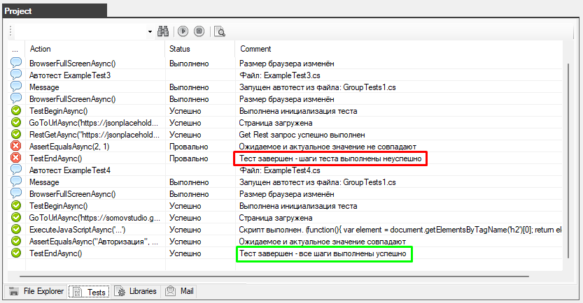

Autotest Group
You can organize a group of autotests and run them.
To do this, create a folder in which the autotests of one group will be stored (for example, the folder group 1)

Next, you need to describe several tests and put them in the group1 folder.
Attention: for tests, the Main function must be declared as a Task
the first file: ExampleTest3.cs
|
File: ExampleTest3.cs |
|
using System; using System.Collections.Generic; using System.ComponentModel; using System.Windows.Forms; using System.Threading; using System.Threading.Tasks; using System.IO; using System.Data; using System.Drawing; using System.Linq; using System.Text; using System.Text.RegularExpressions; using System.Net; using System.Net.Http; using System.Net.Http.Headers; using System.Reflection; using Newtonsoft.Json; using HatFramework; namespace Hat { // Auxiliary class for JSON data public class TestJson { public int userId { get; set; } public int id { get; set; } public string title { get; set; } public string body { get; set; } }
public class ExampleTest3 { // The main variable for the autotest operation Tester tester; // The main input function is declared as a Task. This is important! (the autotest starts working with this function) public async Task Main(Form browserWindow) { // Initialization of the main variable and additional functions tester = new Tester(browserWindow); await setUp(); await test(); await tearDown(); } // The function of getting started with the autotest public async Task setUp() { await tester.BrowserFullScreenAsync(); // Sets the browser resolution to full screen } // The function of performing autotest actions public async Task test() { await tester.TestBeginAsync(); await tester.GoToUrlAsync("https://jsonplaceholder.typicode.com", 5); string result = await tester.RestGetAsync(@"https://jsonplaceholder.typicode.com/posts/1/", TimeSpan.FromDays(1), "UTF-8"); TestJson dataJson = JsonConvert.DeserializeObject<TestJson>(result); tester.AssertEqualsAsync("1", dataJson.userId.ToString()); await tester.TestEndAsync(); } // Autotest shutdown function public async Task tearDown() { // await tester.BrowserCloseAsync(); in this case, we don't need the browser to close } } } |
the second file: ExampleTest4.cs
|
File: ExampleTest4.cs |
|
using System; using System.Collections.Generic; using System.ComponentModel; using System.Windows.Forms; using System.Threading; using System.Threading.Tasks; using System.IO; using System.Data; using System.Drawing; using System.Linq; using System.Text; using System.Text.RegularExpressions; using System.Net; using System.Net.Http; using System.Net.Http.Headers; using System.Reflection; using Newtonsoft.Json; using HatFramework; namespace Hat { public class ExampleTest4 { // The main variable for the autotest operation Tester tester; // The main input function is declared as a Task. This is important! (the autotest starts working with this function) public async Task Main(Form browserWindow) { // Initialization of the main variable and additional functions tester = new Tester(browserWindow); await setUp(); await test(); await tearDown(); } // The function of getting started with the autotest public async Task setUp() { await tester.BrowserFullScreenAsync(); // Sets the browser resolution to full screen } // The function of performing autotest actions public async Task test() { await tester.TestBeginAsync(); await tester.GoToUrlAsync("https://somovstudio.github.io/test_eng.html", 5); string script = @"(function(){ var element = document.getElementsByTagName('h2')[0]; return element.outerText; }());"; string actual = await tester.ExecuteJavaScriptAsync(script); string expected = "Authorization"; await tester.AssertEqualsAsync(expected, actual); await tester.TestEndAsync(); } // Autotest shutdown function public async Task tearDown() { // await tester.BrowserCloseAsync(); in this case, we don't need the browser to close } } } |
We have created two autotests "ExampleTest3.cs" and "ExampleTest4.cs" which are located in the "group1" folder.
Now you need to create a combining autotest GroupTests1.cs that will trigger other autotests.
|
File: GroupTests1.cs |
|
using System; using System.Collections.Generic; using System.ComponentModel; using System.Windows.Forms; using System.Threading; using System.Threading.Tasks; using System.IO; using System.Data; using System.Drawing; using System.Linq; using System.Text; using System.Text.RegularExpressions; using System.Net; using System.Net.Http; using System.Net.Http.Headers; using System.Reflection; using Newtonsoft.Json; using HatFramework; namespace Hat { public class GroupTests1 { // The main variable for the autotest operation Tester tester;
// The main input function (the autotest starts with this function) public async void Main(Form browserWindow) { tester = new Tester(browserWindow); // Initializing the main variable await setUp(); // The function of getting started with the autotest await test1(browserWindow); // The function that calls the autotest from the script ExampleTest3.cs await test2(browserWindow); // The function that calls the autotest from the script ExampleTest4.cs await tearDown(); // Autotest shutdown function } public async Task setUp() { await tester.BrowserFullScreenAsync(); } // This function runs the autotest from the script ExampleTest3.cs public async Task test1(Form browserWindow) { tester.SendMessage("Автотест ExampleTest3", "", "Файл: ExampleTest3.cs", Tester.IMAGE_STATUS_MESSAGE); ExampleTest3 exampleTest3 = new ExampleTest3(); // An autotest variable is being created await exampleTest3.Main(browserWindow); // The autotest is started }
// This function runs the autotest from the script ExampleTest4.cs public async Task test2(Form browserWindow) { tester.SendMessage("Автотест ExampleTest4", "", "Файл: ExampleTest4.cs", Tester.IMAGE_STATUS_MESSAGE); ExampleTest4 exampleTest4 = new ExampleTest4(); // An autotest variable is being created await exampleTest4.Main(browserWindow); // The autotest is started }
// Autotest shutdown function public async Task tearDown() { await tester.BrowserCloseAsync(); // Closes the browser } } } |
As you can see in the ExampleTest3.CS and ExampleTest4.cs autotest will be called sequentially in the test1 and test2 methods.
Run the GroupTests1.cs group autotest

The result on the "Test" tab will reflect the entire progress of the sequential execution of all autotests step by step.

If any of the autotests fails, the check will continue anyway until all the autotests are completed

at the same time, the overall result of the GroupTests1.cs group autotest will be considered a failure.

a report on the complete completion of all tests will also be created


Created with the Personal Edition of HelpNDoc: Qt Help documentation made easy